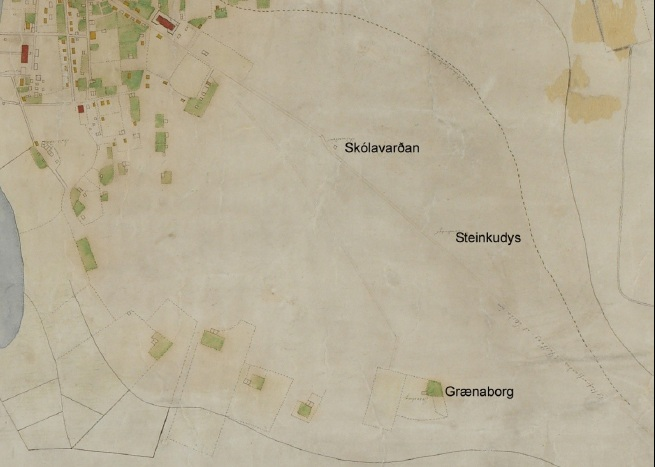
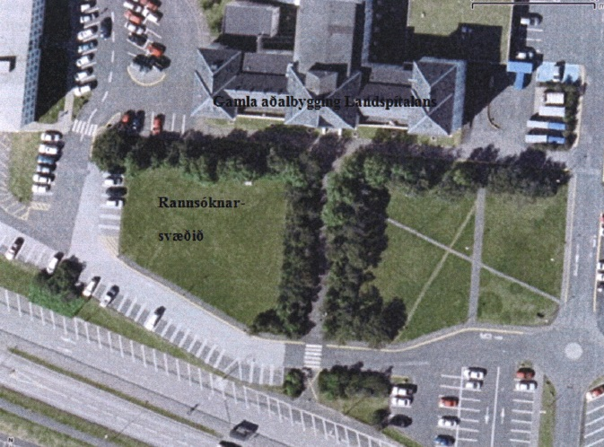

1834 – 1918
Kort Benedikts Gröndal frá árinu 1887 sýnir staðsetningu
torfbæjarins Grænuborgar. Skólavörðuholtið er merkt á myndinni sem
og Steinkudys þar sem Steinunn Sveinsdóttir frá Sjöundaá, sem lést í
tugthúsinu (nú Stjórnarráðið) í ágúst 1805, var dysjuð. Steinunn er
ein aðalpersónan í Svartfugli Gunnars Gunnarssonar.
Bærinn Grænaborg var byggður árið 1834 af Gísla Gíslasyni og Sigríði
Hinriksdóttur konu hans. Bærinn var sagður tómthúsbýli en lítið
undirlendi eða ræktarland fylgdi honum. Í heimildum er þess þó getið
að Gísli hafi náð að rækta tún í kringum bæinn sem var að mestu
urðarbalar og illræktanlegt. Hinrik Gíslason sonur þeirra hjóna tók
við búi af þeim. Hann lést í upphafi 20. aldar en ekkja hans bjó á
Grænuborg til ársins 1918, þegar búseta þar lagðist af. Líklegt er
að rústir bæjarins hafi verið nánast óhreyfðar þar til Landspítalinn
var byggður á árunum 1925-1930 en þá var lóðin tekin í gegn.
Lóðin sem bæjarfógeti leigði Gísla Gíslasyni til afnota og
uppbyggingar 10. maí 1834 í 20 ár og skráði í bæjarstjórnarbók 1835
hefur verið um hálfur hektari.

Kort eftir Benedikt Gröndal1887

Loftmynd — staðsetning við Landspítalann
2011
Ekki eru til ljósmyndir af Grænuborg svo vitað sé en
fornleifarannsóknir fóru fram á svæðinu árið 2011 í tengslum við
væntanlega stækkun Landspítalans. Á myndinni sést staðsetning
Grænuborgar á grasflötinni fyrir framan gömlu Landspítalabygginguna.
Ekki eru heimildir um búskap á býlinu en sennilega hefur eitthvað
verið af dýrum, þá helst til einkanota eins og þá tíðkaðist.
Uppgröfturinn leiddi í ljós mannabústað en engin mannvirki komu í
ljós sem eru samtíða Grænuborgarbýlinu sem benda til dýrahalds.
Líklegt er að Gísli hafi stundað lausamennsku bæði á sjó og í landi
ásamt öðrum tilfallandi verkum sem buðust í Reykjavík, eins og
tíðkaðist gjarnan meðal tómthúsmanna.
Til marks um harða lífsbaráttu hjónanna í Grænuborg birtist í
Þjóðólfi 3. febrúar 1877 þakkarkveðja frá þeim hjónum. Þar koma þau
þakklæti sínu á framfæri til Geirs Zöega kaup- og útgerðarmanns og
herra Jóns Péturssonar yfirdómara og er það svo hljóðandi.
Við undirskrifuð örvasa hjón, biðjum hér með herra ritstjóra
Þjóðólfs, að votta í blaði sínu okkar hjartanlegustu þakkir herra
dbr.manni Geir Zoéga í Rvík, sem nú í 10 ár hefur gefið okkur
hjónum, síðan maðurinn minn fatlaðist af sjónleysi, 8 til 10 krónur
á ári. Þar næst færum vér sömu þakkir herra yfirdómara Jóni
Péturssyni, sem samtals er búinn að gefa okkur 16 kr. Þessar og
aðrar velgjörðir góðra manna við okkur, vonum við að hinn Algóði
launi. Gísli Gíslason og Sigríður Hinriksdóttir frá Grænuborg við
Reykjavík.